.png)
.png)
.png)
.png) 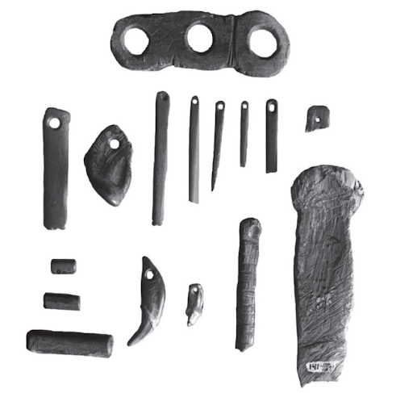
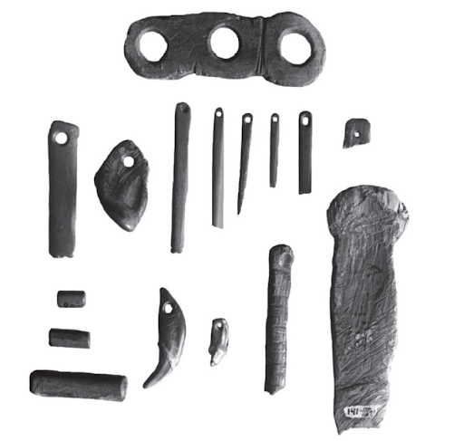
.png)
.png)
.png)
.png)
Афонтова гора
Афонтова гора — археологическая группа из пяти стоянок позднего палеолита. Расположена в России у города Красноярска, на левом берегу Енисея. Археологические исследования на Афонтовой горе начались в 1884 году. За более чем столетний период изысканий была выявлена масса артефактов (каменные и костяные орудия, кости животных и человека), несколько палеолитических стоянок. Были получены данные, свидетельствующие о том, что человек приручил собаку 15-17 тысяч лет назад. На сегодняшний день здесь выделено восемь культурных слоев.
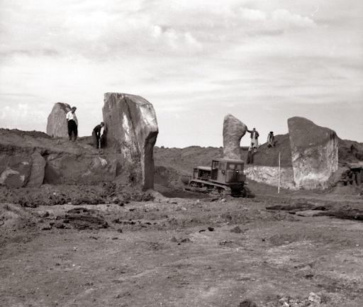
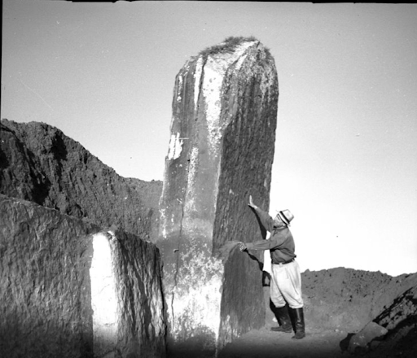
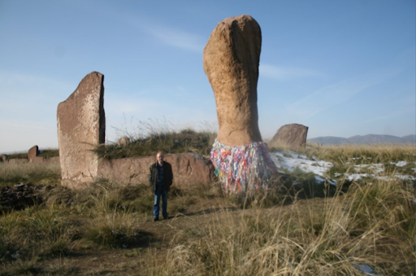
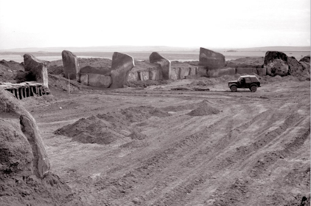
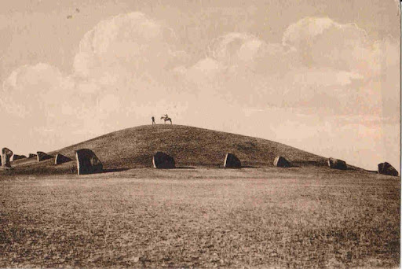
Большой Салбыкский курган
Большой Салбыкский курган — руинированные остатки крупнейшего кургана бассейна Среднего Енисея, получил свое название по Салбыкской котловине. Он находится в Камызякской степи, в пяти километрах от автодороги Абакан — Сорск и примерно в 70 километрах от республиканского центра. Впервые Большой Салбыкский курган был описан в 1739 году российским учёным и путешественником Герардом Фридрихом Миллером во время «Первой академической экспедиции». Раскопали курган в 1954-56 гг. экспедицией института истории материальной культуры и Хакасского научно-исследовательского института языка, литературы и истории, под руководством С.В. Киселева. По подсчетам ученого, в глубокой древности, высота этой земляной пирамиды достигала 30 метров. К началу раскопок насыпь уже сильно омыло, но и в таком виде высота холма достигала 12 метров.
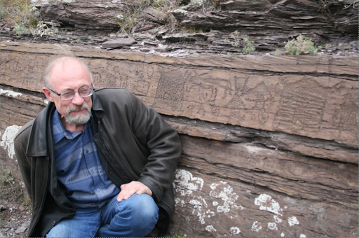
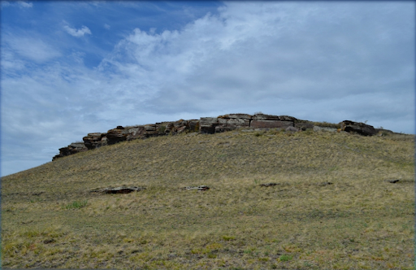
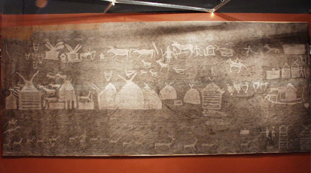
Боярская писаница
Боярская писаница — комплекс наскальных рисунков времен бронзового века в Хакасии. На ней изображены жилища, предметы быта, одежда, сцены охоты и религиозной жизни приенисейских народов тех лет.
Малую Боярскую писаницу относят к тагарской культуре бронзового века. Большая писаница появилась немногим позже, на рубеже бронзового и железного веков, в 400–200 годах до нашей эры.
На Малой писанице археологи выделили 40 объектов, на Большой писанице — 130. Песчаник Большой писаницы покрыт естественными трещинами, выбоинами и царапинами, поэтому распознать петроглифы здесь сложнее. На скалах изображены сцены религиозного культа, охоты, выпаса скота. Археологи распознали на рисунках боевые луки, кафтаны с мехом, а также силуэт мифического животного, который встречается на стенах древних склепов Хакасии. Людей тагарцы изображали схематично, животных — контурно, а крупные объекты выскоблены по всей их площади. Самые распространенные образы среди наскальных рисунков — дома. Древние художники изображали и сибирские деревянные срубы, и юрты, характерные для кочевников южносибирских степей. Особенно тщательно тагарцы изображали котлы: кое-где выгравировано даже их содержимое.
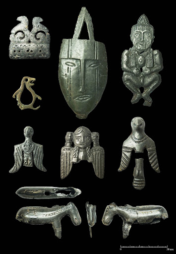
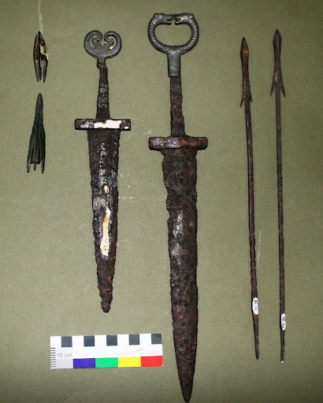
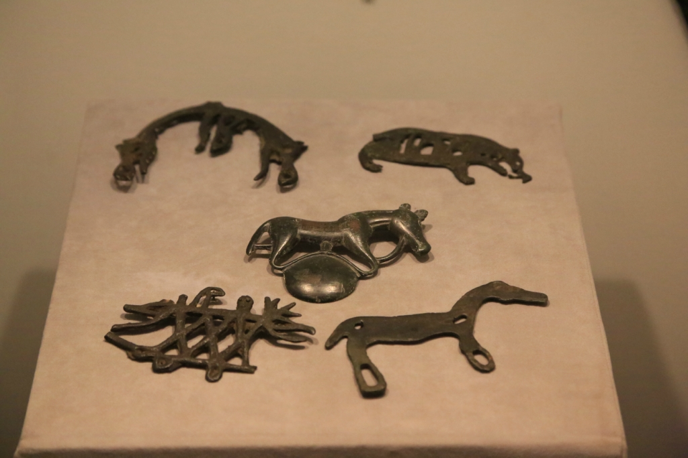
Ишимский клад
Ишимский клад, комплекс древних предметов, найденный в 1911 (близ деревни Ишимка, в 50 км к С. от Ачинска) на островке среди болот в тайге. Здесь было жертвенное место (подобное Гляденовскому костищу), посещавшееся населением в течение тысячелетия, начиная с первых вв. до н. э. Клад содержал вещи, принесённые в дар богам и связанные с древним шаманским ритуалом. Среди них: оружие — железные мечи, кинжалы, копья, наконечники стрел (в том числе древнейшие бронзовые, а также железные); металлические зеркала (местной и кит. работы), амулеты-украшения, выполненные в зверином стиле. Среди последних есть вещи южного происхождения, типичные для тагарской культуры и таштыкской культуры, но большинство характерно для лесной полосы Сибири и Приуралья (см. Пьяноборская культура). Сочетание различных привозных вещей в И. к. свидетельствует о далёких торговых связях местных таёжных охотников — поставщиков пушнины.
Клад хранится в Красноярском краеведческом музее.
Клад хранится в Красноярском краеведческом музее.
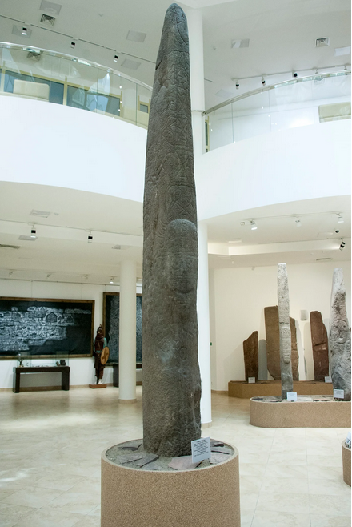
 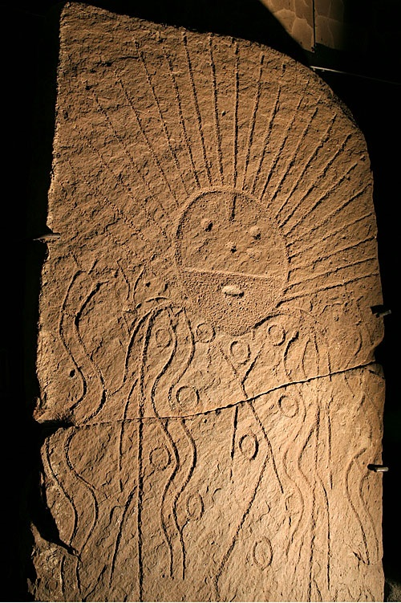
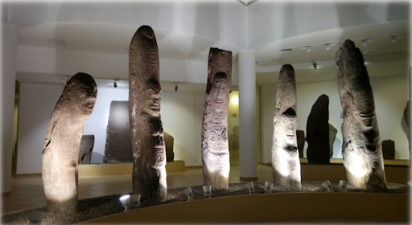
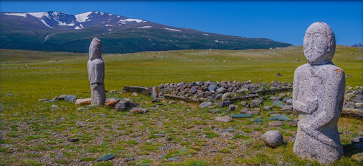
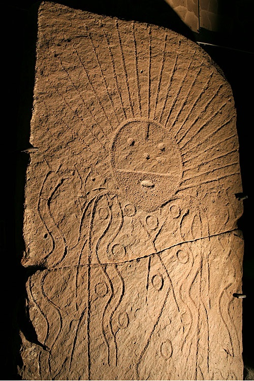
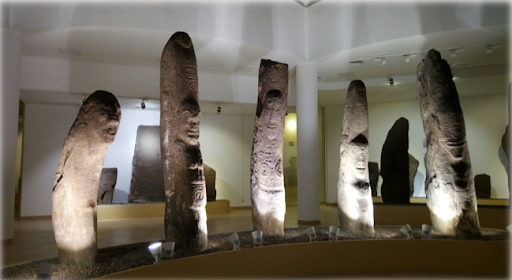
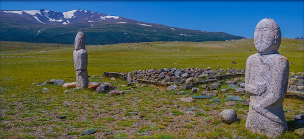
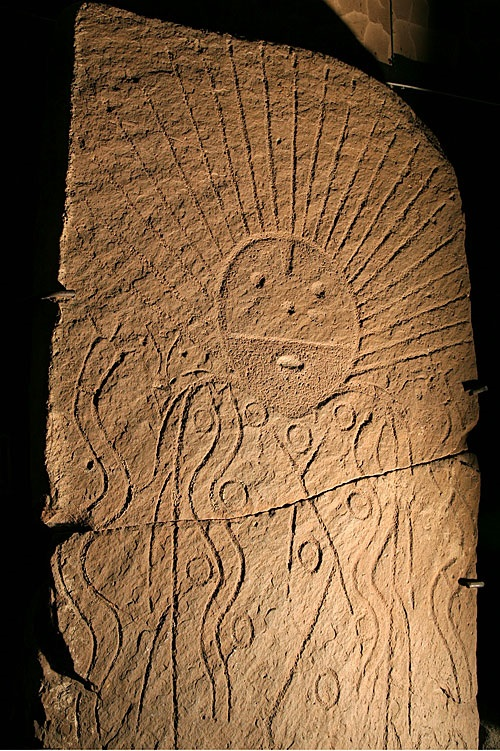
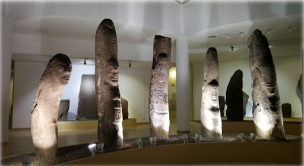
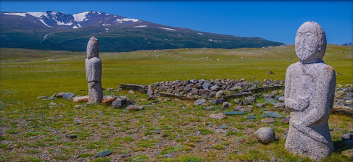
Каменные изваяния окуневской культуры
В начале бронзового века возникла южносибирская культура скотоводов, которую принято называть "окуневской". На память о ней до наших дней дошли загадочные каменные идолы и плиты с изображенными на них фантастическими животными, сакральными знаками и символами.
Эти каменные изваяния историки относят к концу III – нач. II тыс. до н.э. "Окуневцы" не только наносили изображение на камень, но и старались придать ему объем, а чтобы облегчить себе труд находили каменные глыбы удлиненной формы. Материалом в основном служил распространенный в Хакасии песчаник, а также более твердый гранит. Чаще всего после обработки камня изваяние приобретало столбообразную форму и достигало трех-четырех метров. В центре высекалась личина и силуэты мифических или реально существующих животных.
Эти каменные изваяния историки относят к концу III – нач. II тыс. до н.э. "Окуневцы" не только наносили изображение на камень, но и старались придать ему объем, а чтобы облегчить себе труд находили каменные глыбы удлиненной формы. Материалом в основном служил распространенный в Хакасии песчаник, а также более твердый гранит. Чаще всего после обработки камня изваяние приобретало столбообразную форму и достигало трех-четырех метров. В центре высекалась личина и силуэты мифических или реально существующих животных.


Косогольский клад
Осенью 1966 г. в Красноярский краевой музей поступил клад вещей тагарской культуры, найденный у северо-восточной окраины оз. Большой Косоголь в Ужурском районе. Клад насчитывает около 200 предметов, из которых 130 — бляхи и пряжки, выполненные в зверином стиле, и другие украшения; остальные вещи клада представляют собой слитки бронзы, куски бронзовой стружки. Кроме того, найдены два скифских котла. Наиболее интересны следующие вещи клада: тринадцать бронзовых рельефных блях, изображающих фантастическое существо с головой козла и свёрнутым в спираль змееподобным туловищем со стилизованным изображением змеиной головы на хвосте; бронзовая бляха, близкая во многом к описанным выше, но вместо головы козла здесь голова быка, змееподобное тулово кончается изображением головы хищника итд.
Косогольский клад, видимо, можно датировать концом тагарской — началом таштыкской эпохи, т.е. III-I вв. до н.э.
Косогольский клад, видимо, можно датировать концом тагарской — началом таштыкской эпохи, т.е. III-I вв. до н.э.
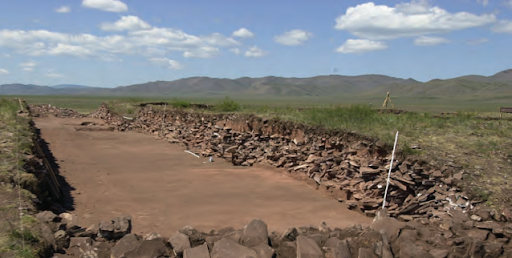
Курган Аржан
Курган Аржан — захоронение скифского вождя второй половины VII века до н. э. в Пий-Хемском районе республики Тыва. Диаметр — 80 м, высота — 2 м. Впервые исследован в 1997 году. Раскопан в 2001—2003 годах российско-германской экспедицией (К. В. Чугунов, Г. Парцингер, А. Наглер).
В Аржаане-2 найдено более 20 кг золотых изделий бытового и культового характера, выполненных в «зверином стиле» с высочайшим ювелирным искусством. Основная часть предметов находится в республиканском музее Тывы (г. Кызыл), часть — в Государственном Эрмитаже.
В Аржаане-2 найдено более 20 кг золотых изделий бытового и культового характера, выполненных в «зверином стиле» с высочайшим ювелирным искусством. Основная часть предметов находится в республиканском музее Тывы (г. Кызыл), часть — в Государственном Эрмитаже.
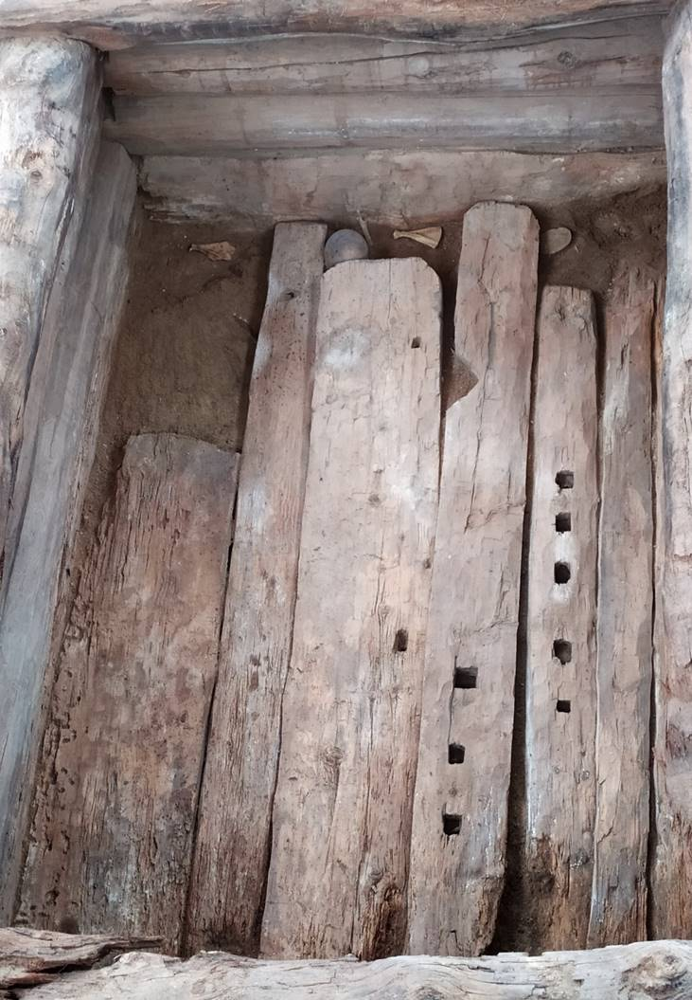
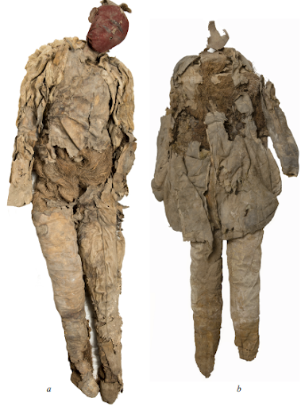
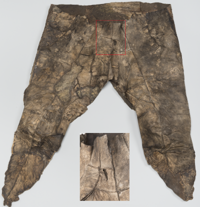
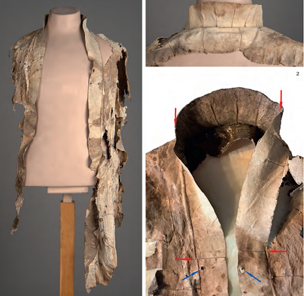
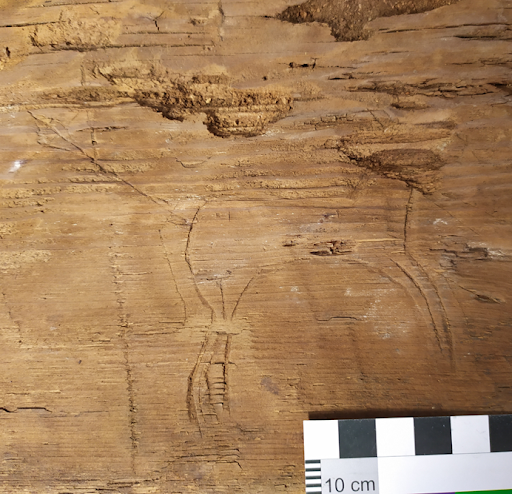
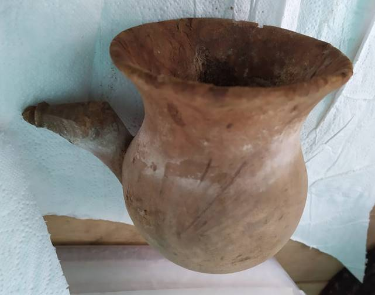
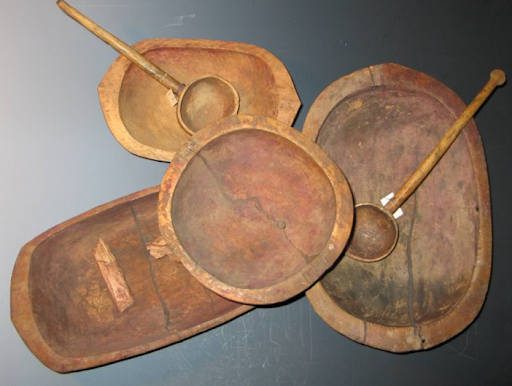
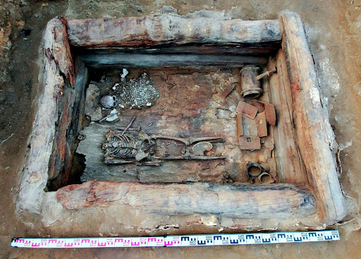
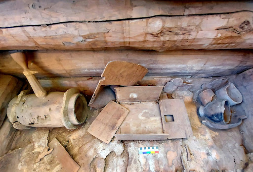
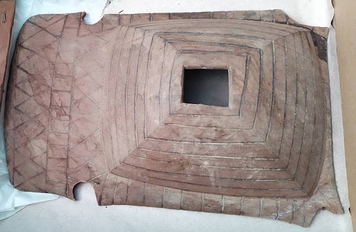
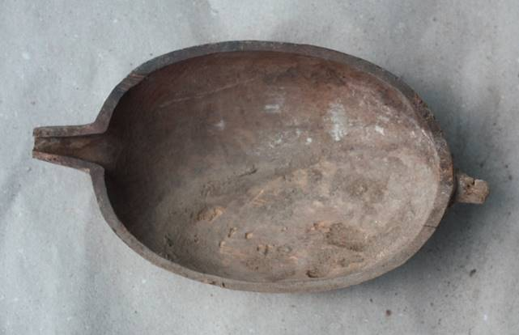
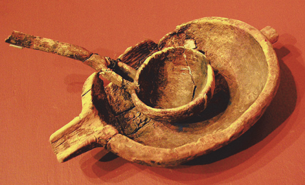
Могильник Оглахты
Оглахтинский могильник — комплекс захоронений Таштыкской культуры. Расположен в местности у хребта Оглахты в Хакасии, к северу от Абакана на левом берегу реки Енисей. Погребения датируются первой половиной I тыс. н. э.
Сухость почвы и благоприятные климатические условия позволили сохраниться быстро истлевающим в других условиях материалам: дереву, коже, мехам и ткани. Были обнаружены погребальные маски, а также разнообразное оружие, включая большие прямоугольные щиты из натянутой на деревянный каркас кожи. Артефакты из Оглахтинского могильника хранятся в Эрмитаже.
Сухость почвы и благоприятные климатические условия позволили сохраниться быстро истлевающим в других условиях материалам: дереву, коже, мехам и ткани. Были обнаружены погребальные маски, а также разнообразное оружие, включая большие прямоугольные щиты из натянутой на деревянный каркас кожи. Артефакты из Оглахтинского могильника хранятся в Эрмитаже.
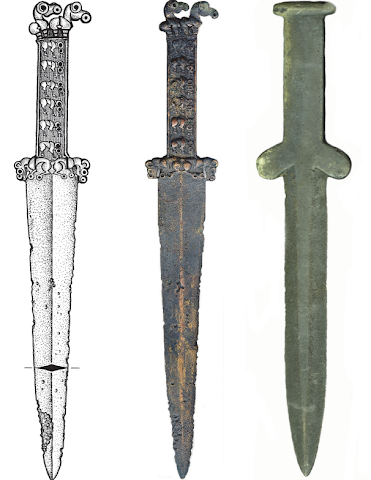
Новопятницкий клад
В один из летних дней 1987 года в Красноярский краевой краеведческий музей пришёл обычный школьник с необычной поклажей. Ученик Новопятницкой средней школы Олег Генелев выложил перед музейщиками бронзовые кельты, чеканы, кинжалы, ножи. Этот бесценный с исторической точки зрения клад он нашёл в грунте обрушившегося в воду подмытого берега реки Рыбной, протекающей сразу за околицей деревни Новопятницкая Уярского района.
В итоге удалось собрать и передать в фонды Красноярского краевого музея 25 бронзовых предметов. Клад состоит из 2 кинжалов, 10 кельтов, 3 чеканов, а также 9 ножей, из которых 3 вкладышевых. Кроме того, при промывке обвалившегося в реку грунта обнаружен обломок вкладышего шила с фигуркой кабана на навершии. Клад датируется VII в. до н.э.
В итоге удалось собрать и передать в фонды Красноярского краевого музея 25 бронзовых предметов. Клад состоит из 2 кинжалов, 10 кельтов, 3 чеканов, а также 9 ножей, из которых 3 вкладышевых. Кроме того, при промывке обвалившегося в реку грунта обнаружен обломок вкладышего шила с фигуркой кабана на навершии. Клад датируется VII в. до н.э.
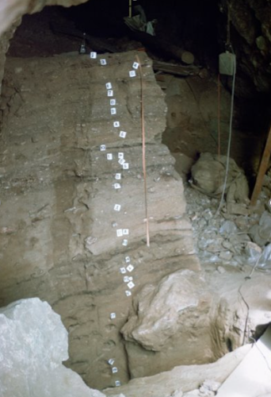
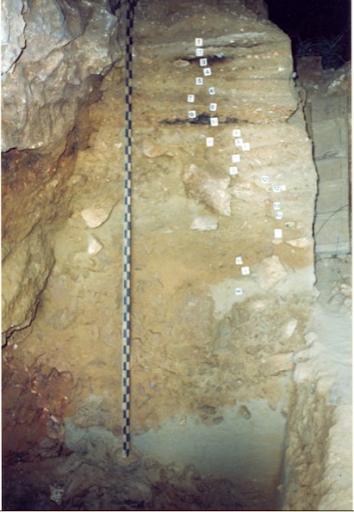
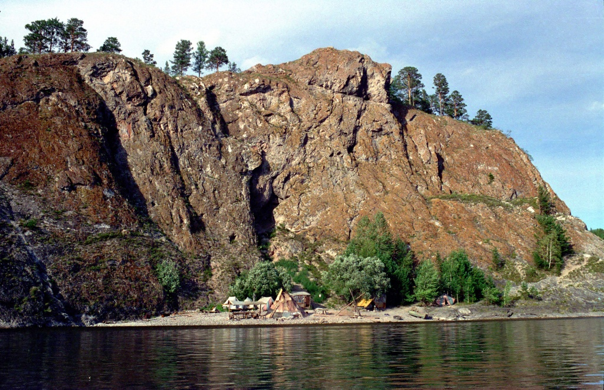
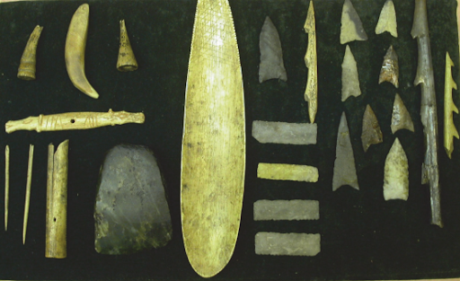
Пещера Еленева
Пещера Еленева является уникальным археологическим и природно-историческим памятником на Среднем Енисее. В голоценовых отложениях этой полости последовательно запечатлена история развития материальной культуры района от эпохи мезолита до современности. Археологами выделено до 24 культурных слоев и их горизонтов. В 1886-88 годах первые раскопки в пещерах близ устья р. Караульной проводил наставник Красноярской учительской семинарии А. С. Еленев.
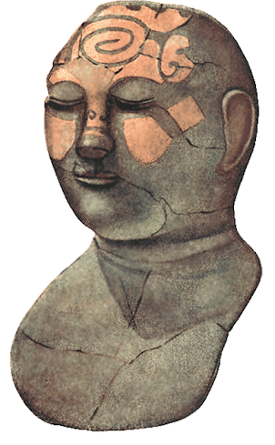
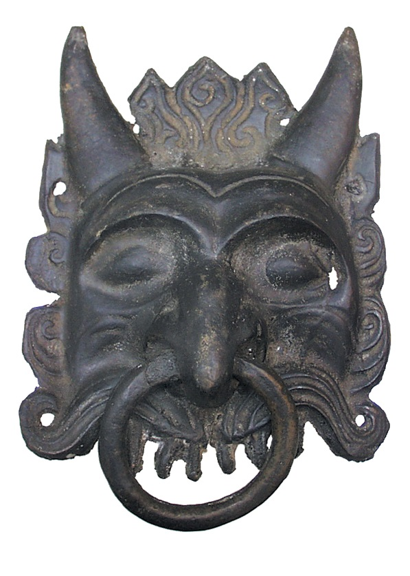
Ташебинский дворец
Ташебинский дворец — памятник архитектуры гунно-сарматской эпохи I в. до н. э. в Хакасии. Располагался в междуречье р. Абакана и р. Ташеба, в 8 км к юго-западу от Абакана у с. Чапаева. Стены у входа в здание украшали облицовочные глиняные плитки со штампованным ёлочным узором. Двери центрального зала были украшены массивными бронзовыми ручками в виде личины рогатого горбоносого чудовища в трехрогой короне, с бакенбардами, усами и оскаленными зубами. Подвижное кольцо для открывания двери было вставлено в его нос.
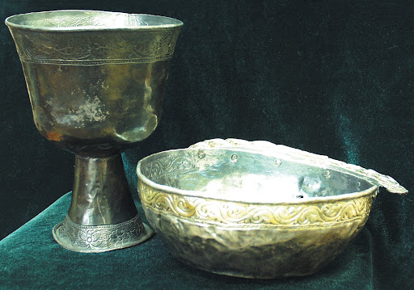
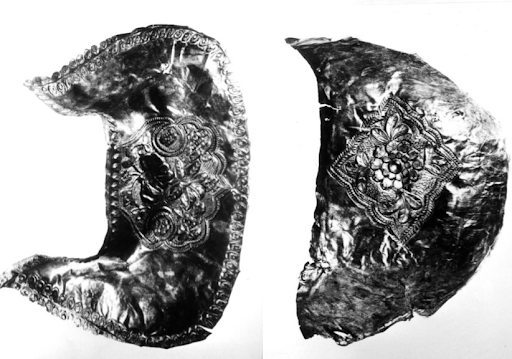
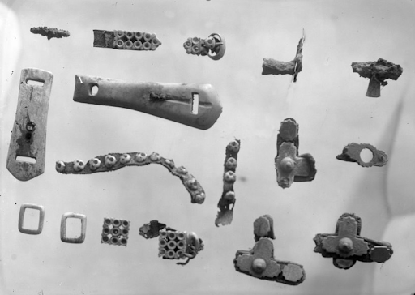
Часовенная гора
При раскопках на Часовенной горе были найдены золотые серьги, серебряный ковш, кубок, ваза, посеребрянное седло и стремена.
Предполагается, что на часовенной горе до прихода русских во время кыргызского каганата, ещё называемого Древне-Хакасским государством, в XI-XIII веках нашей эры располагалось городище. Скорее всего, это был земляной вал, который ограждал частокол из заострённых стволов деревьев и ров. На горе уже было найдено погребение, и древние захоронения находятся теперь в краеведческом музее.
Предполагается, что на часовенной горе до прихода русских во время кыргызского каганата, ещё называемого Древне-Хакасским государством, в XI-XIII веках нашей эры располагалось городище. Скорее всего, это был земляной вал, который ограждал частокол из заострённых стволов деревьев и ров. На горе уже было найдено погребение, и древние захоронения находятся теперь в краеведческом музее.